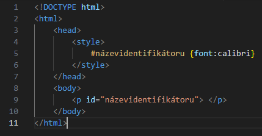
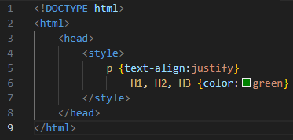

Pro většinu vzhledových úprav stránky se používá takzvaných kaskádových stylů (CSS). Jejich zápis se trochu liší od HTML. Jsou tři způsoby jak CSS používat.
CSS umožňuje užití tzv. identifikátorů. Do hlavičky mezi tag <style> se zapíše název identifikátoru se znakem # na jeho začátku. Za název
uvedete jeho specifikace do těchto {} závorek. Následně můžete uvést tento název do tagu za atribut "id" a tím tento tag získá všechny
uvedené specifikace.
Příklad užití identifikátoru:

Podobně lze nadefinovat tagy a dokonce i tagy použité uvnitř tagu. Například mohu určit vlastnosti všech tagů <p> a zároveň i
vlastnosti všech tagů <h1> užitých uvnitř tagu <p>. Jeden soubor vlastností může patřit více tagům. Stačí je zapsat za sebe a
vložit mezi ně čárky.
Řekněme tedy, že chci, aby všecny odstavce byly zarovnané do bloku a nadpisy měly zelenou barvu.
Zápis těchto podmínek: 
Pozicování je způsob, jak určit polohu jakéhokoliv prvku na stránce. Relativním pozicováním uržíte posunutí objektu vůči jeho běžné poloze. Absolutním pozicováním připnete objekt na pevnou pozici na stránce. Pozici na svislé ose stanovíte jako hodnotu třeba top:10px. Kladné hodnoty posouvají směrem dolů, záporné zase nahoru. Na vodorovné ose left:10px. Kladné hodnoty posouvají vlevo, záporné vpravo. Hodnotu můžete zapsat třeba v pixelech, procentech nebo centimetrech. S tím také souvisí atributy "width" a "height" pro šířku a výšku. Pro příklad můžu vytvořit postraní lištu na pravém boku stránky.
<div style="position:relative; width:200px; height:200px;left:82%; top:-60px;border:4px solid"> &l/div>
Kaskádové styly nabízí pestrou škálu vzhledových úprav. Nemá smysl je tu všechny jmenovat, ale vložím zde odkaz na jejich přehled.